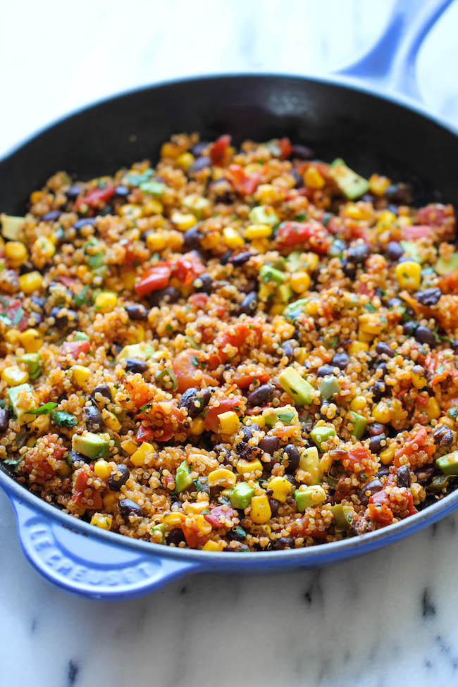

Mexican Quinoa

Description
And that’s exactly what this quinoa dish is. With a fun Mexican twist, this dish is chockfull of so many amazing flavors, from the tangy lime juice to the hint of spiciness from the chili powder and jalapeno. And not only is this healthy and nutritious but it’s also unbelievably easy to make. Simply throw everything into the skillet and that’s it. Even the quinoa is cooked right in the pan, really letting the flavors soak in.
Now who said healthy food has to be boring?
Ingredients
- 1 1/2 cups dry quinoa
- 3 cups water or veggie broth
- 2 cans sweet corn (drained)
- 2 cans black beans (drained)
- 1 cup chopped cilantro
- 1 1/4 cup fresh salsa
- 2 tablespoons chili powder
- 2 tablespoons cumin
- 1 tablespoon salt
Instructions
- Cook quinoa according to package instruction with either water or broth
- When quinoa is done, mix together all ingredients in a large bowl
- Serve with tortilla chips or in torillas as a burrito or taco
- Can serve with avocado, sour cream, hot sauce, etc.